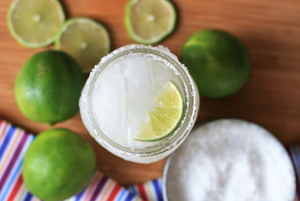

Keto Margarita

Description
Ingridients
- 3 cups ice
- 2 fluid ounces tequila
- 1 fluid ounce lime juice
- 2 ½ teaspoons low-calorie natural sweetener
- 1 tablespoon coarse salt
- 2 lime wedges
- 1 pint-sized Mason jar
- 2 fluid ounces orange-flavored sparkling water
Steps
- Fill a shaker half-full with ice. Add tequila, lime juice, and sweetener to the shaker. Seal and shake vigorously until outside is frosted, 10 to 15 seconds.
- Place salt on a plate. Run 1 lime wedge along the rim of the Mason jar. Press the jar down into the salt. Fill the jar with ice cubes.
- Strain margarita into the jar. Top with sparkling water and stir. Garnish with remaining lime wedge.